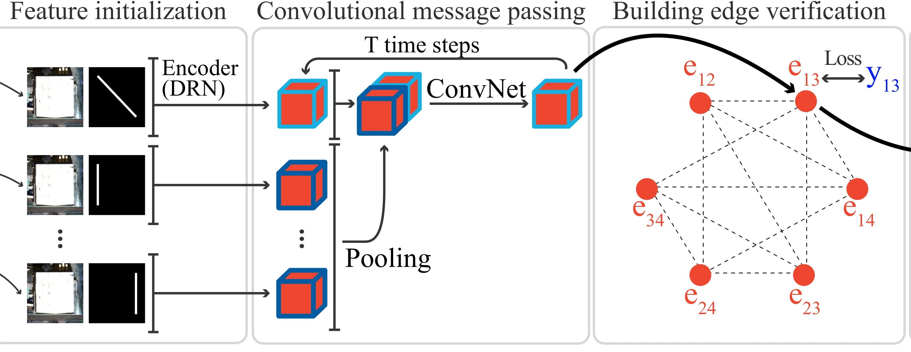

About Me
I am a first-year Master student in the Computing Science at Simon Fraser University, under supervision of Prof. Yasutaka Furukawa. I received my bachelor degree from Beihang University. My research interests include geometry reasoning and scene understanding in Computer Vision.
Publications
|  |
Conv-MPN: Convolutional Message Passing Neural Network for Structured Outdoor Architecture Reconstruction
[Arxiv]
[Project Page]
|